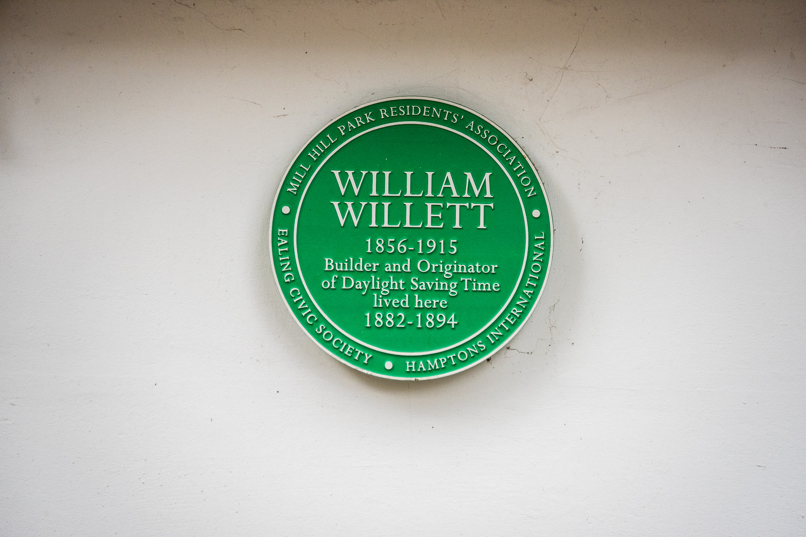
A Walk Built on
Ruskin's Terms
This walk is run jointly by the South Acton Community Builders Co-operative (SCBC) and the South Acton Residents Action Group (SARAG), and its premise goes back to a period of anxiety rather than celebration. In the early 2000s, with redevelopment of the postwar estate under discussion again, SARAG invited English Heritage in to carry out a characterisation study of South Acton — documented work, since verified, from around 2004–5, though the guide dated it slightly earlier on the walk. The point, she was careful to stress, was never to get individual buildings listed. South Acton is a mid-century council estate; nobody expected Historic England to come calling for a single tower block. The point was to understand the dynamic of the whole place, and to encourage people, wherever they live, to actually look at what's around them.
The walk takes its title from John Ruskin, whose ideas about permanence in building gave SCBC something to measure the area's history against.
"When we build, let us think that we build forever."
— John Ruskin, quoted by the guide
"We might think Ruskin overdid it — but in this country, where people think a 300-year-old house is a really good thing to be living in, the extent to which there's constant change in some areas is quite contradictory to the things we say we value."
This year's theme, layered onto the usual route, is work — those who labour, who construct — chosen because 2026 marks the centenary of the 1926 General Strike. It surfaces at several points along the way. It also happened, by coincidence, to be a day when the District line into Gunnersbury wasn't running, which meant a smaller turnout than the previous day's walk and at least one attendee arriving on foot from Acton Town — a fittingly practical reminder, on a walk about transport and labour, of how easily either can be disrupted.
The Bus Garage Beneath
the Business Park
Before it was a business park, this land was Rothschild orchards. In 1921 the London General Omnibus Company opened a 33-acre bus overhaul works on the site — engineering and maintenance sheds employing, at their peak, some 3,500 people and servicing thousands of vehicles. The guide's account adds a sports ground, a medical centre and a canteen able to feed workers by the hundreds at a sitting; it was, in effect, a small self-contained town built around buses. London Transport scaled the works back through the 1980s and closed it in 1990.
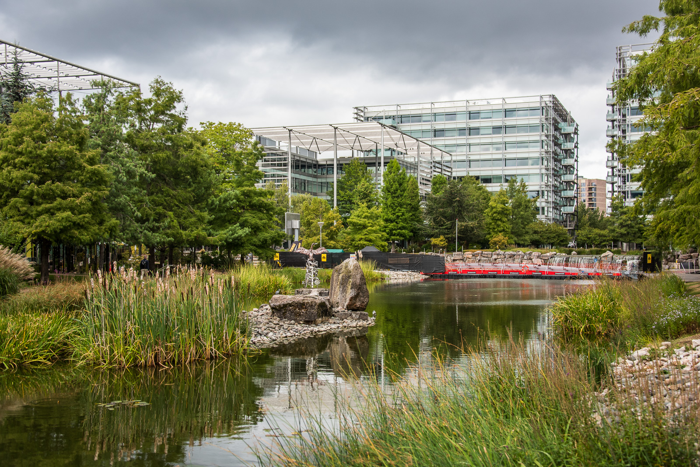
The redevelopment that followed took until 2015 to finish. A masterplan by Rogers Stirk Harbour + Partners — The guide's "Lord Rogers" — for the developer Stanhope produced the twelve buildings now branded EnjoyWork.com, the first completed at the end of 2000. A footbridge to Chiswick Park station, opened in 2019, shaves a few minutes off the commute for the people who work here now.
During the General Strike of May 1926, transport workers and heavy industry walked out across Acton and Chiswick in solidarity with the miners. The guide read out a line from the diary of a schoolboy, Henry St John, who lived in Chiswick and went to school in Acton at the time: revolution seemed imminent, he wrote, with 3,000 troops, fixed bayonets and machine guns reported at the London General Omnibus Company works.
Hyde Park was turned into a food depot under armed guard during the same strike. Whether the boy's estimate of troop numbers was accurate is impossible to check from a diary quote read aloud on a walk — but the fear itself, at a site this large and this central to keeping London moving, is easy to believe.
The Triangle They
Wouldn't Build On
A wedge of land boxed in by three railway lines — two District line tracks and a since-abandoned freight line — was orchard and gravel pit in the 19th century, then allotments for railway workers, then simply left alone from the late 1940s. Nature did the rest.
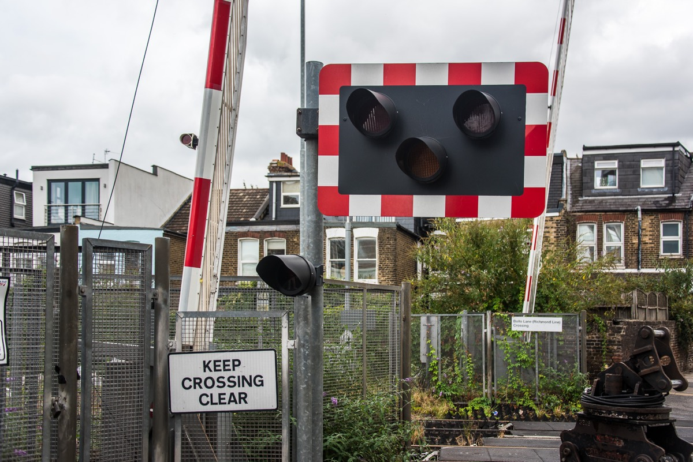
In 1981 a scheme to build light industrial units here provoked a campaign by the newly formed Chiswick Wildlife Group, backed by the Greater London Council and the London Wildlife Trust. In July 1983, a public inquiry ruled in the site's favour — the first time in Britain that a public inquiry had preferred nature conservation over development. The land passed to the local council, and the reserve opened to the public in 1985, run since by London Wildlife Trust volunteers.
"There are forty such reserves in London. So there'll be one near you. If you don't know where yours is, take that away from this walk — go and find it."
Chiswick Park station, a few yards from the reserve's gate on Bollo Lane, was rebuilt in 1932 in the clean, lettered style of that era of Underground design, and is Grade II listed.
A Pillar Box With
No King on It
The guide describes the walk as interactive by design, and the pillar boxes are the running proof of it: a Victorian box on Antrobus Road, dated to around 1880, carries no royal cipher at all — no "VR," no monogram of any kind. One year a visitor pointed it out; a later group, unimpressed, sent the guide looking for something better and turned up a second uncyphered box nearby, on the corner of Antrobus Road, which has since picked up the nickname the "Republican" pillar box.
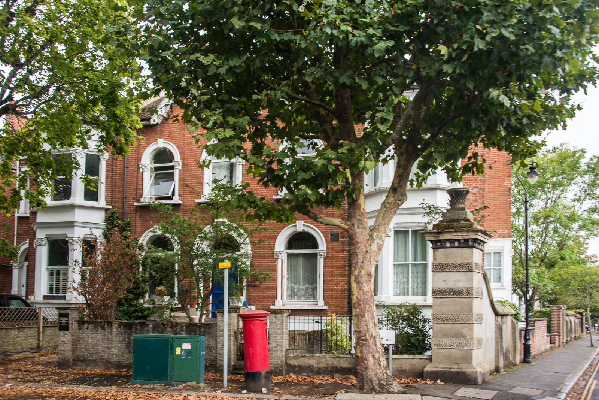
Nobody on the walk claims the missing cipher was a political statement, and the guide is careful to say so — there's no evidence it was deliberate, and every likelihood it was simply a manufacturing or contracting quirk from a brief period around 1880. It survives here as local folklore rather than settled history, kept alive mostly because "anonymous" boxes like it are genuinely uncommon.
Close by, a signal box from 1878 at Acton Works is separately Grade II listed, part of the infrastructure that grew up around the London Underground's 1922 electrification works nearby.
Soapsud Island
South Acton's mixed development dates to the 1859 Enclosure Act, after which the British Land Company bought the land and laid it out in small plots — part of a wider Liberal-backed scheme to spread property ownership widely enough to spread the vote with it. The plots here were narrower than elsewhere in Acton, and unrestricted leases meant homes, workshops, laundries and livestock all shared the same streets. By the late 1880s, the guide's account puts as many as 30,000 pigs kept within the estate — a figure that, whatever its precision, makes the point about density and mixed use better than any planning document could.
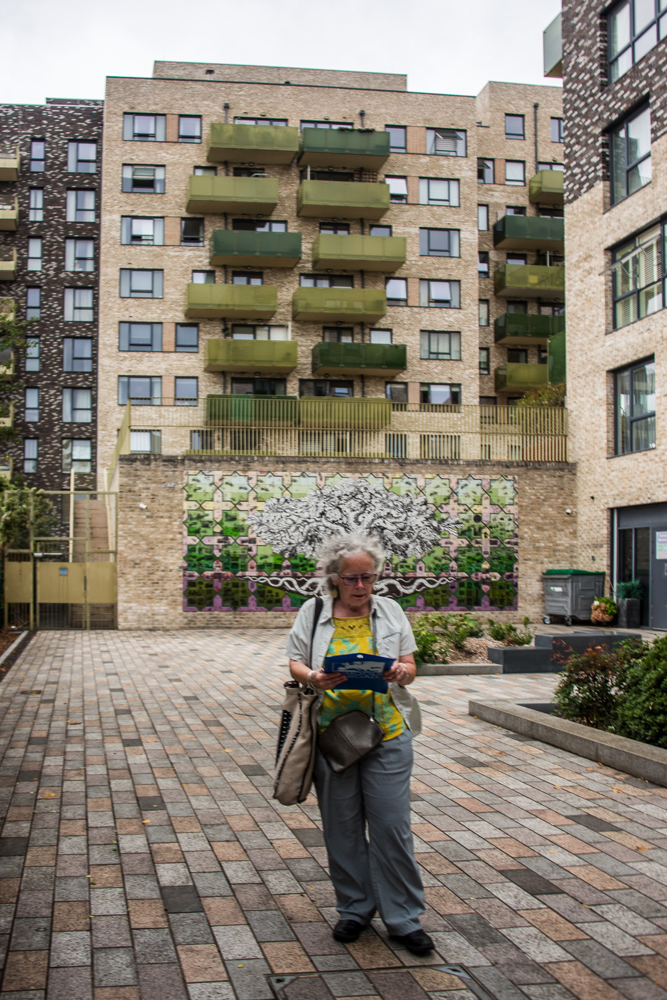
Laundry work came to dominate after 1880, following the trade out from an already-established "Soapsud Island" in North Kensington. The 1901 census recorded around 2,500 women here as laundry workers, across a range of skilled roles — some running a self-employed "bag wash" from home, others employed in larger operations with staff of their own. Houses built for the trade often had a double frontage wide enough for a cart, work carried on downstairs and ironing upstairs. On the trading estate today, ACAVA's artists' studios and a business called Elis — still doing laundry — sit on ground that has done broadly the same kind of work, on and off, for over a century.
Patrick Caulfield, later a Royal Academician, was born on 29 January 1936 at 17 All Saints Road, South Acton. His family returned to his parents' native Bolton during the war; his mother had taken in washing as a bag wash before they left, a memory he carried into adulthood. He left school at fifteen, went on to Chelsea School of Art and the Royal College of Art alongside David Hockney, and became associated with — while personally resisting the label of — the Pop Art movement.
He died in 2005. The road where he was born was renamed Caulfield Road shortly afterwards, as the area was redeveloped around it.
Public art on the modern development near South Acton station — opened in 1880, and the point where the walk crosses back toward Bedford Park and Acton Green — includes a mural called Tree of Life by the artist Carrie Reichardt, made from conversations with local residents.
All Saints &
the General Strike
The Reverend Andrew Hunter Dunn was priest at All Saints from 1873, and used his own land, pooled with land from the local authority, to lay out South Acton Recreation Ground — "the Rec" — developed in 1889–90. All Saints Church itself stood from 1872 until its demolition in 1980; the South Acton Working Men's Club, founded the year Hunter Dunn arrived, lasted until 2021.
On the fifth day of the General Strike, some 400 striking workers gathered at All Saints for an evening of music, while other churches nearby, by the guide's account, preached against them for upsetting the natural order of things.
— as recounted on the walk
"Every day during the strike there was a meeting on Ealing Common — led one day by a band from the National Union of Railwaymen, with builders' union men and a large contingent of women from the Acton Labour Party. That's significant, because so little is recorded about women's part in the strike at all — certainly not the laundry workers, who weren't unionised and had no reason to be out."
Three Castles on
the Mound
Strafford Road still carries the laundry trade in its street names — Washboard Close and Mangle Close back onto Brouncker Road — close to a former laundry site at 61–63 Southfield and to South Acton's earliest council housing, built in 1930–31. The postwar rebuilding that followed raised three tower blocks named, rather grandly, after Welsh castles: Beaumaris, Corfe and Harlech, built 1968–71. The names were meant sincerely — postwar social housing here was built to the same ideal of "nothing too good for ordinary people" that shaped the welfare state more broadly, not as a last resort.
In the early 2000s, a plan emerged to demolish Barry House — the tallest of the three blocks — and build on the recreation ground instead, with residents due to move into the new housing before a replacement park was eventually laid out where Barry House had stood.
Residents objected. The Rec, they pointed out, had existed since the 1870s — and its long-standing legal status as dedicated parkland turned out to protect it from exactly this kind of substitution. The scheme was dropped. Land at the back of the Rec, however — former railway sidings only informally folded into the park once the trains stopped running in the 1950s — carried no such protection, and was built on regardless when the wider site was redeveloped.
Corfe Tower today hosts an SCBC garden restoration project, and a Victorian pillar box outside neighbouring Pembroke House rounds out the walk's small collection of postal curiosities.
Stave Off Decay
by Daily Care
William Morris House, opened in 2016, is SCBC's own office — named, the guide explained, for Ruskin's fellow Victorian and self-described "mentor," the Arts and Crafts designer and writer. Close by, a 19th-century garden wall marks the physical boundary between South Acton and the Mill Hill Park garden suburb next door, part of the estate's original 19th-century engineering.
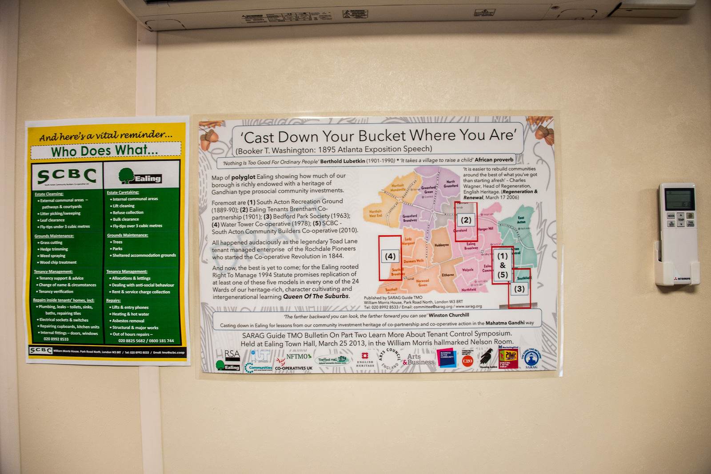
SCBC operates as a Tenant Management Organisation (TMO): residents vote to take services — repairs, grounds maintenance, a local housing office — directly from the council, with re-ballots required every five years to continue. At its postwar height, South Acton held around 2,000 properties and 5,000 people, served by a single visiting housing officer once a fortnight. Since SCBC went live in 2015, the estate has had one and a half housing officers of its own plus daily on-site repairs staff — a surveyor and a resident technician, on hand five days a week.
"Stave off decay by daily care." — Ruskin's line, adopted as something close to SCBC's own motto for the repairs work it does.
An Ice House &
the First Waitrose
The walk crosses the underground course of Stamford Brook — a genuine lost tributary of the Thames, still running beneath the surface here — past old-style 19th-century South Acton terraces and into Woodlands Park, once the grounds of Woodlands House and given over to the local authority at the start of the 20th century for parkland and education.
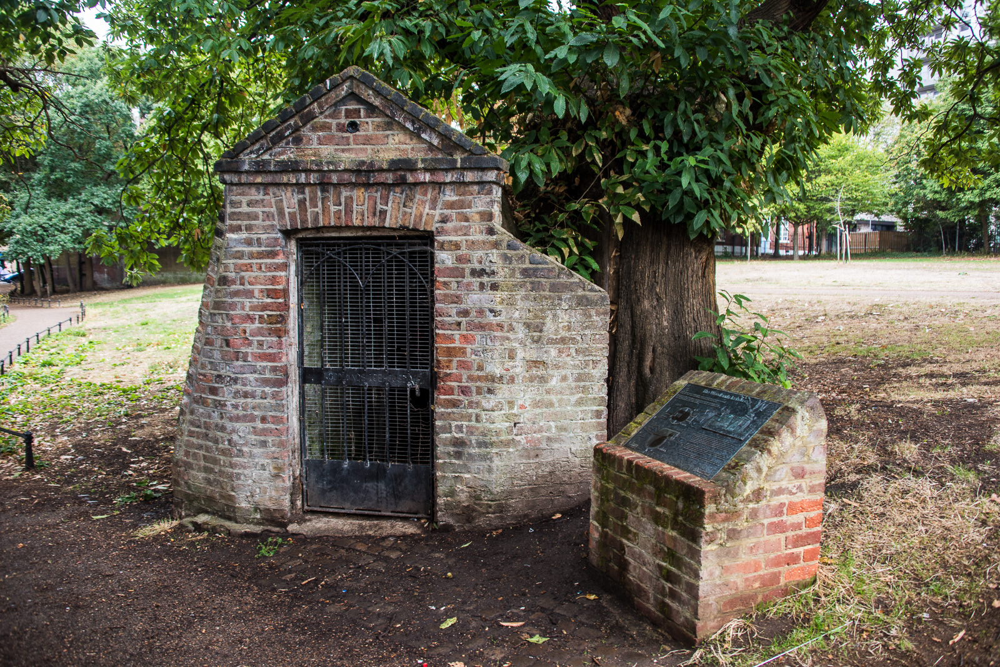
An 18th-century ice house sits near the park's centre — a below-ground store for ice, cut and imported before mechanical refrigeration existed, refurbished during millennium-era works to the park. It stands close to what the walk's own printed notes describe as the site adjoining the first Waitrose shop: Wallace Waite, Arthur Rose and David Taylor opened their first grocery at 263 Acton High Street in 1904, becoming Waitrose Ltd in 1908 and joining the John Lewis Partnership in 1937.
The land around the park has hosted an unusual relay of institutions. Acton County Grammar School stood here when Pete Townshend and John Entwistle — later of the Who — finished their schooling in 1961. It was followed by the first campus of Brunel University, then Thomas Huxley Teacher Training College, then an outreach of what became Ealing, then Thames Valley College.
More recently the site has held the Caspian Cultural Centre — home to a large collection of Persian-language books and manuscripts, with planning permission granted some years ago for student accommodation, a proper library and a café, though as of this walk construction had still not started — the National Autistic Society, and now Ark Soane Academy.
The Garden Suburb
Built to Keep Its Distance
Richard White bought land here in 1809 and built a house of which only one wing now survives. On his death in 1849 the estate passed to his widow, and the 1859 Enclosure Act eventually led her to sell it on to the British Land Company. From 1877, the builder William Willett laid out three roads — Avenue Crescent, Avenue Gardens and Heathfield Road — as a self-contained garden suburb called Mill Hill Park, deliberately walled off from working-class South Acton next door. The division was the point from the outset, not something planning drifted into later.
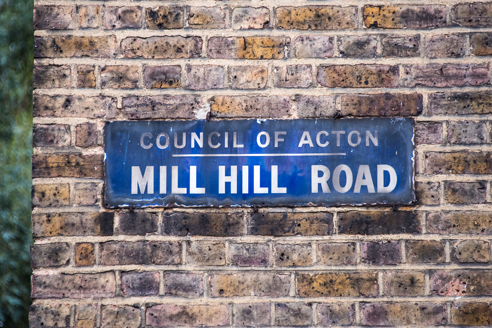
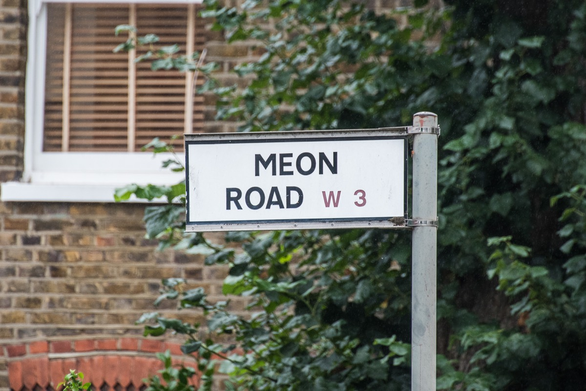
Willett imposed roughly 200 building rules across the estate, including a requirement that basement, ground- and first-floor windows be kept high enough to maximise daylight into every room. According to the local conservation area's own character study, that insistence on daylight fed directly into his son's later, much more famous campaign. Houses were never to be subdivided — a rule long since broken across the suburb, whatever today's conservation-area status might suggest.
Mill Hill Park is now a locally — though not statutorily — designated conservation area, with an active residents' association archive that includes a published history, Celebrating the Light.
The Man Who Gave Everyone
an Extra Hour
Number 11 Avenue Crescent, built around 1800, was home to Richard White — a solicitor and a founder of the Law Society — and his wife Mary, who bought land nearby on Oldham Terrace to endow one of the area's earliest schools, decades before state education existed. The school building survives, retained as a planning condition when a mosque was later built on the neighbouring site.
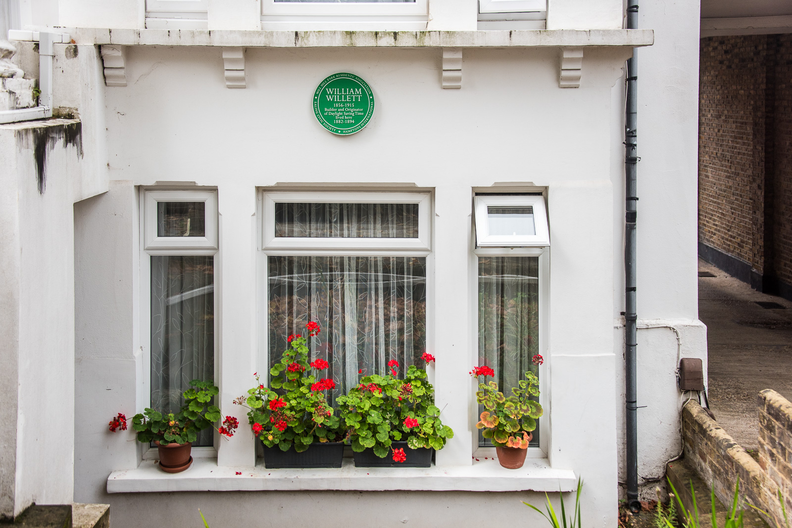
Next door, at what is now 16 Avenue Crescent, lived William Willett (1856–1915) — son of the suburb's developer — from 1882 to 1894, a residence confirmed today by an Ealing Civic Society plaque. Willett later moved to Chislehurst, where, according to the story he told, the idea of adjusting clocks to make better use of summer daylight came to him on an early-morning ride. His 1907 pamphlet, The Waste of Daylight, eventually became law as British Summer Time in 1916 — a year after he died.
"He was adamant about it for years and never lived to see it. People still argue today about whether it was worth doing."
A few doors along on Avenue Gardens lived Margaret Dovaston (1884–1954), an official war artist during the First World War — a 1915 watercolour of troops crossing Hill 60 under shellfire, bought by a regimental association, survives in a regimental museum today. She returned afterwards to meticulously researched historical costume scenes, and had already founded the Ealing Art Guild, later the Ealing Arts Club, in 1910. Her house and studio, designed by her architect brother John, dates from 1925.
Homes for People Who
Kept Being Moved
St Margaret's Lodge, built in 1948–9, filled a gap left by wartime bomb damage on the site of the former St Margaret's Terrace. The South Acton Children's Centre nearby, designed by Llowarch Llowarch and opened in 2006, merged two earlier nursery services into one, built around outdoor play space that photographs badly and, by all accounts, works rather well.
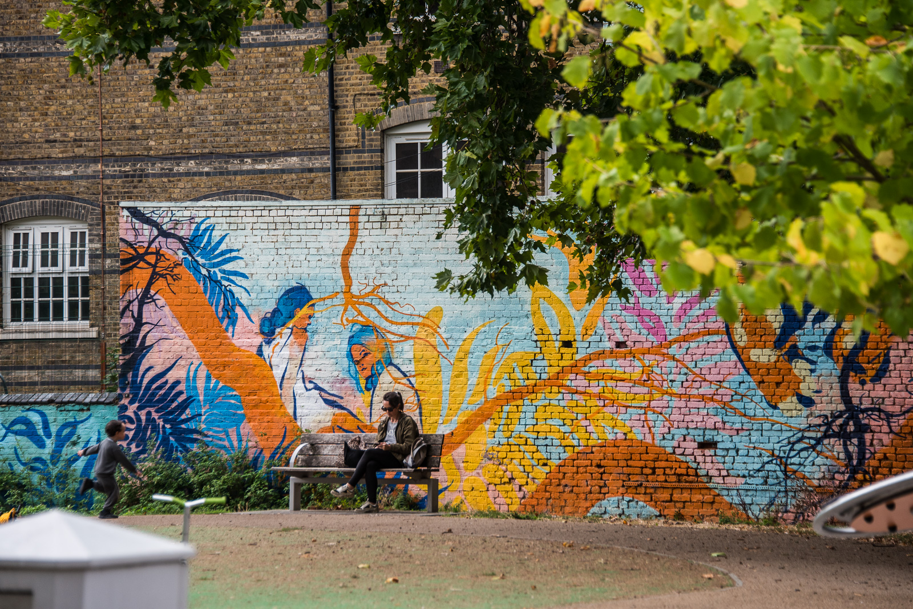
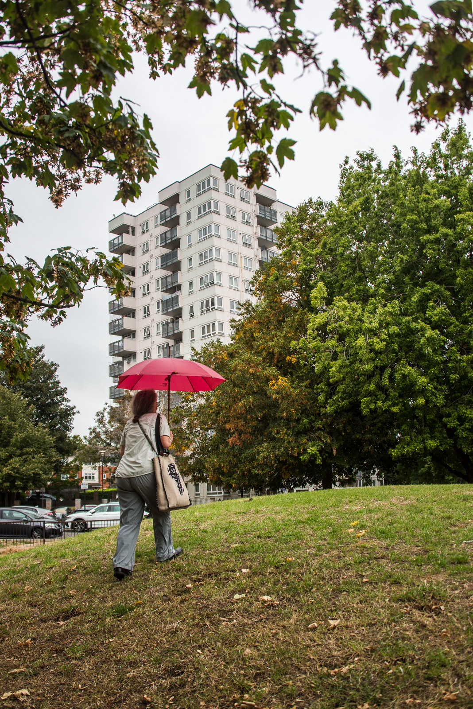
The 19th-century school on Osborne Road — architect Edward Monson, foundation stone laid on 8 May 1880, the year compulsory education for five- to ten-year-olds was introduced — passed through several names, from South Acton Schools to Berrymede Junior School, before merging in 2022 with the neighbouring infants' school to form Acton Gardens Primary School. Pete Townshend started there in September 1952. New council homes are now being built along the same road.
The view opens out to Acton Town station — opened in 1879 as Mill Hill Park, rebuilt in 1932–33 and Grade II listed — and, opposite, a high-rise built by Women's Pioneer Housing, a housing association founded in 1920 to provide independent homes for single working women at a time when they were routinely refused mortgages. Contemporary press, by the guide's account, made much of the block as Britain's first high-rise built exclusively for that purpose — a claim worth treating as the guide's own gloss rather than independently verified fact.
Housing Goes Back
Into the Industrial Estate
Until the 1950s, homes and workshops sat on the same South Acton streets; postwar planning drew a hard line between the residential estate and a dedicated industrial estate, a separation now quietly being undone. Bookbinder Point, the first new housing to return to the industrial side, takes its name from Blissett Bookbinders, a specialist family firm that began on Palmerston Road and later bound Douglas Bader's wartime logbooks among its more notable commissions, before relocating to Brentford.
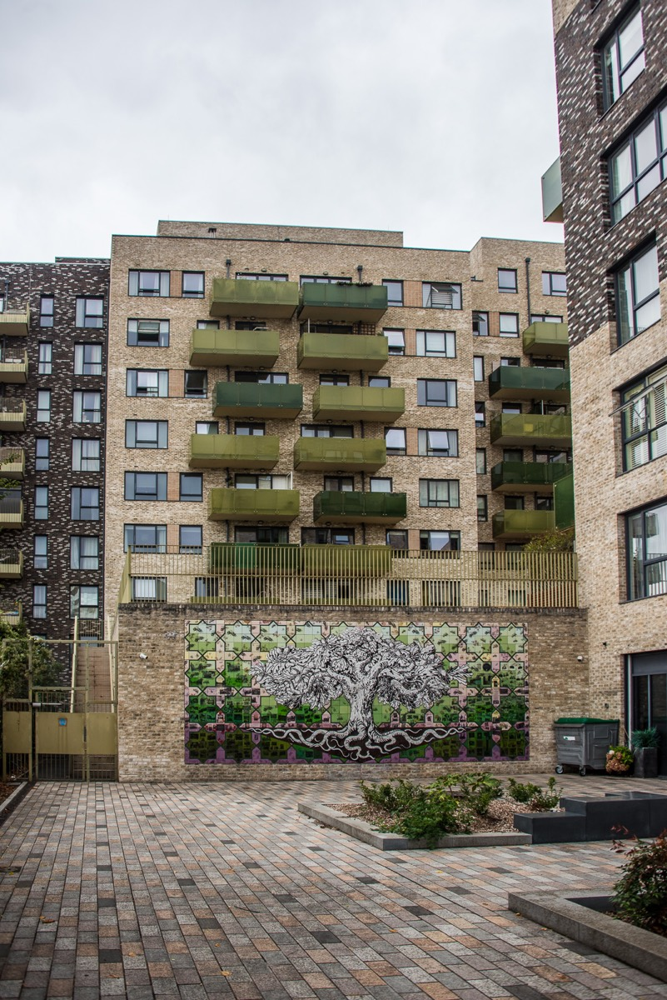
The new high-rise on the site has stood finished but unoccupied for several years, held up — by the guide's account — by failures to meet fire and building-safety sign-off, at a time of heightened scrutiny following the Grenfell Tower fire.
"If people are putting their lives in your hands, you don't want anyone cutting corners and hoping it goes ahead anyway."
— The guide
Nearby, Ealing Council has bought back Wallis Yard — 95 flats — from the original developer: a small but pointed reversal of the sell-off that shaped South Acton for the previous half-century, and, fittingly for a walk that began with Ruskin, one more attempt to build here as if it might last.